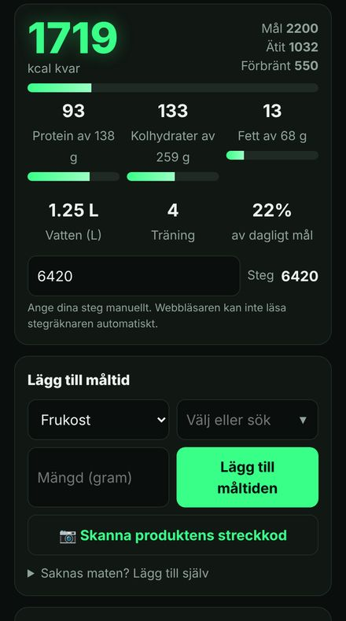
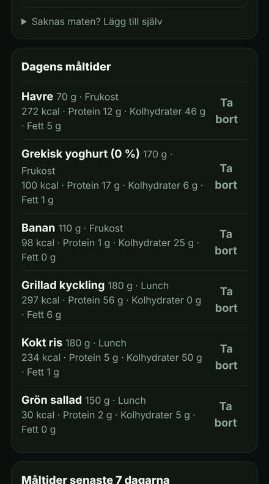
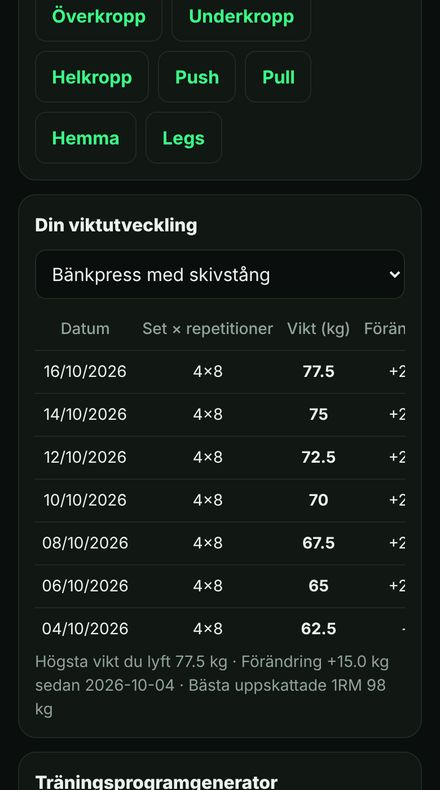
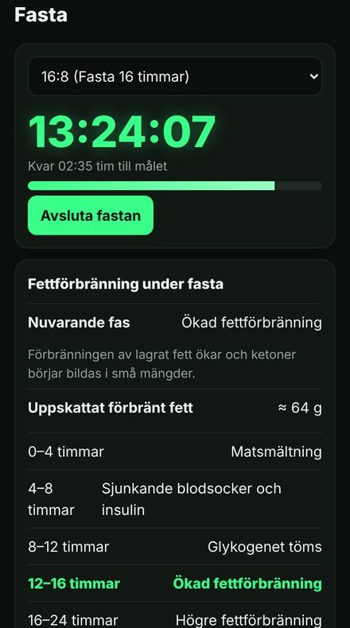

Kaloriräknare och träningsapp – med en riktig personlig tränare
Musclivo samlar allt du behöver för att gå ner i vikt, bygga muskler eller äta bättre: räkna kalorier och makron, logga dina träningspass, följ din vikt och dina kroppsmått – och få en plan och uppföljning direkt från din personliga tränare i Malmö.
Prova gratis i 3 dagar
Allt på ett ställe
Räkna kalorier och makron
Logga måltider på sekunder, skanna streckkoder och se protein, kolhydrater och fett mot ditt dagliga mål. Över 2 000 svenska livsmedel och produkter.
Träningslogg och program
Färdiga program för gym och hemmaträning, animerade övningar och en logg som visar hur din styrka ökar vecka för vecka.
Vikt och kroppsmått
Följ vikt, midja, höft och andra mått i tabeller och grafer så att du ser verkliga framsteg.
Timer för periodisk fasta
16:8, 18:6 eller egen fasta – med faser som visar vad som händer i kroppen.
Personlig coachning
Chatta med din tränare, skicka en veckoavstämning och få kost- och träningsplan anpassad efter dina mål.
12 språk
Svenska, engelska, arabiska, ryska, tyska, franska, spanska, turkiska, ukrainska, polska, norska och danska.
Så ser appen ut



Personlig tränare och kostrådgivare i Malmö
Bakom Musclivo står en certifierad personlig tränare och kostrådgivare i Malmö. Med medlemskapet får du en träningsplan och kostupplägg anpassade efter dina mål, din nivå och din vardag – och direkt uppföljning varje vecka i appen. Coachningen sker online, så du kan träna var du vill.
Vanliga frågor
Är Musclivo gratis?
Du kan prova alla funktioner gratis i 3 dagar utan betalkort. Därefter kan du fortsätta med ett månadsmedlemskap som inkluderar personlig coachning.
Behöver jag ladda ner en app?
Nej. Musclivo fungerar direkt i webbläsaren på mobil och dator. Du kan också installera den på hemskärmen så att den öppnas som en vanlig app och skickar påminnelser.
Kan jag använda Musclivo för att gå ner i vikt?
Ja. Appen räknar ut ditt dagliga kalorimål utifrån ålder, längd, vikt och aktivitetsnivå, och hjälper dig att hålla ett lagom kaloriunderskott med tillräckligt med protein.
Finns appen på arabiska?
Ja. Musclivo finns på arabiska, svenska, engelska och nio andra språk, och du kan byta språk när som helst.
Är mina hälsouppgifter säkra?
Dina uppgifter lagras säkert och används bara för att ge dig tjänsten. Läs mer i vår integritetspolicy.